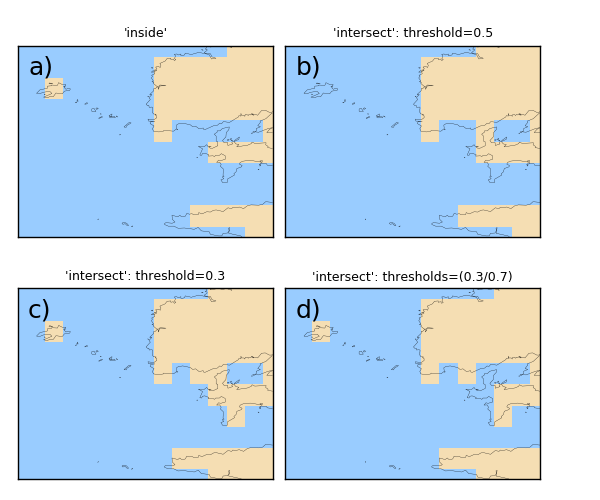

1.3.3.6.2.1. Masque d’après traît de côte¶
Voir : polygon_mask() map() add_key()

En a), une cellule est masquée si son centre est sur la terre. En b), la cellule n’est masquée que si plus de 50% se sa surface est sur de la terre. En c), comme en b) mais seulement 30% de la surface suffit à masquer la cellule. En d), comme en c) mais si la cellule a plusieurs fois de terre, il faut que la terre couvrant 70% de la cellule pour que celle-ci soit masquée.
# Grid (15x15)
nx, ny = 15, 10
import numpy as N
from vacumm.misc.axes import create_lon, create_lat
lon = create_lon(N.linspace(-5.2, -4.4, nx))
lat = create_lat(N.linspace(48, 48.6, ny))
# Plot params
import pylab as P
import vacumm.misc.color as C
P.figure(figsize=(6, 5))
P.subplots_adjust(top=.92,left=.03,bottom=.03,wspace=.05,hspace=.2)
kwplot = dict(colorbar=False,cmap=C.cmap_linear([(.6, .8, 1), C.land]), \
contour=False,show=False,fillcontinents=False,fill='pcolor',
drawmeridians=False, drawparallels=False, res='h', key=True, xymasked=False)
# Mask using shoreline
from vacumm.misc.grid.masking import polygon_mask
from vacumm.misc.plot import map2
import MV2 as MV
# - mask if central point sur terre (mode = 0 = 'inside')
lon2,lat2 = N.meshgrid(lon,lat)
mask0 = polygon_mask((lon2, lat2), 'h', mode=0, ocean=False)
mask0 = MV.array(mask0, axes=[lat, lon])
mask0.long_name = "'inside'"
map2(mask0, subplot=221, **kwplot)
# - mask if cell more than 50% of land (mode = 1 = 'intersect')
thresholds = .5
mask1 = polygon_mask((lon2, lat2), 'h', mode=1, thresholds=thresholds, ocean=False)
mask1 = MV.array(mask1, axes=[lat, lon])
mask1.long_name = "'intersect': threshold=%g" %thresholds
map2(mask1, subplot=222, **kwplot)
# - mask if cell if more than 30% of land
thresholds = .3
mask1 = polygon_mask((lon2, lat2), 'h', mode=1, thresholds=thresholds, ocean=False)
mask1 = MV.array(mask1, axes=[lat, lon])
mask1.long_name = "'intersect': threshold=%g" %thresholds
map2(mask1, subplot=223, **kwplot)
# - mask if than 70% of land if shoreline intersects cell more than once
thresholds = (.3, .7)
mask1 = polygon_mask((lon2, lat2), 'h', mode=1, thresholds=thresholds, ocean=False)
mask1 = MV.array(mask1, axes=[lat, lon])
mask1.long_name = "'intersect': thresholds=(%g/%g)" %thresholds
map2(mask1, subplot=224, **kwplot)
# Save
from vacumm.misc.plot import savefigs
savefigs(__file__, pdf=True)
P.close()